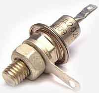
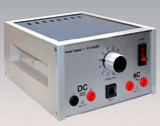
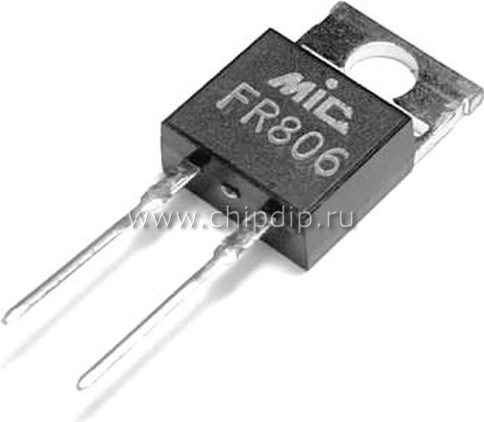

1.5.6. Выпрямительные и импульсные диоды
Выпрямительные диоды
Назначение — преобразование переменного тока промышленной частоты в постоянный. Используются переходы с большой площадью для пропускания больших токов. Кремневые выпрямительные диоды работают в диапазоне температуры от - 60°С до + 125°С. Предельные электрические режимы: обратное напряжение Uобр.mах и средний выпрямительный ток Iвыпр.
Сегодня промышленностью выпускаются кремниевые диоды, характеризуемые Iвыпр > 100 А и Uобр.mах = 1000 В. Если необходимо работать при U > Uобр., то диоды соединяются последовательно. Для увеличения выпрямляемого тока можно включать диоды параллельно.
Выпрямление переменного тока с помощью полупроводникового диода основано на его односторонней электропроводности. Она заключается в том, что диод оказывает очень малое сопротивление току, протекающему в одном (прямом) направлении и очень большое сопротивление току, протекающему в другом (обратном) направлении. Рассмотрим этот процесс более подробно (рис. 7.6).
Рис. 7.6. Работа выпрямительного диода.
Если трансформатор, напряжение на вторичной обмотке которого U2 = 25 В, нагрузить на резистор, например с сопротивлением 2,4 кОм, то через него потечет ток I = U2/R = 25/2,4кОм = 10мА. Включив между этим резистором и трансформатором диод Д, увидим, что он действует на протекающий ток как вентиль. Мы знаем уже, что ток через диод может беспрепятственно протекать только в одном направлении. Отрицательная полуволна напряжения отсекается. Это отчетливо обнаруживается на графике изменения падения напряжения на резисторе R. Таким образом, мы уже получим выпрямленное напряжение, постоянное по направлению. Однако значение его, к сожалению, далеко не постоянно во времени. Такое напряжение называют пульсирующим. Этот недостаток устраняется с помощью особой схемы из четырех диодов. Из графика видно, что у выпрямителей данного типа вторая полуволна также используется для получения постоянного напряжения, в результате чего пульсация существенно уменьшается. Процесс выпрямления в такой схеме кратко можно пояснить следующим образом. При положительной полуволне ток протекает по цепи: обмотка трансформатора, Д3, R, Д2 и вновь попадает в обмотку. Диоды Д1 и Д4 при этом заперты. При отрицательной полуволне ток течет через Д4, R и Д1, причем через R он течет в том же направлении, что и в первом случае. Диоды Д2 и Д3 в это время заперты.
Основными параметрами выпрямительных диодов являются:
– максимально допустимый прямой ток Iпр.max,
– максимально допустимое обратное напряжение Uобр.max,
– максимально допустимая частота fmax.
По первому параметру выпрямительные диоды делят на диоды:
– малой мощности, прямой ток до 300 мА,
– средней мощности, прямой ток 300 мА - 10 А,
– большой мощности – силовые, максимальный прямой ток определяется классом и составляет 10, 16, 25, 40, ..., 1600 А.
 Серийно выпускаемые промышленностью выпрямительные диоды имеют следующие обозначения: КД102, КД106, КД204, КД212, КД226; сдвоенные диоды КД205; два диода с общим катодом КД704; последовательно соединенные диоды КД629.
Импульсные диоды
Импульсными называют диоды, предназначенные для пропускания в прямом направлении очень коротких импульсов, длительностью менее микросекунды, с большой амплитудой тока. При столь коротких импульсах основное влияние на работу диода будут оказывать барьерная ёмкость и длительность обратного восстановления, обусловленная скоростью рекомбинации носителей заряда. Барьерная ёмкость некоторых импульсных диодов может быть ниже 1 пФ. Импульсные диоды, функционирующие на частоте примерно 1 ГГц, часто обладают точечной конструкцией. Также импульсные диоды изготавливают планарной, меза-планарной, сплавной и сварной конструкций. Пусть через импульсный диод протекает электрический ток в прямом включении. Если резко изменим полярность приложенного напряжения, то диод мгновенно не перейдёт в закрытое состояние, а вначале существенно возрастёт обратный ток, обусловленный наличием на участке электронно-дырочного перехода повышенной концентрации неосновных носителей заряда. Затем обратный ток начинает снижаться почти по экспоненте ввиду рекомбинации неосновных носителей зарядов и их миграции через электронно-дырочный переход, по окончании чего обратный ток установится на определённом уровне.
Импульсные диоды применяют в электронных ключах, генераторах, модуляторах и формирователях импульсов и пр., причём длительность периода импульсов может быть даже меньше нескольких пикосекунд. Такие диоды используют, например, в демпферах и выходных выпрямителях импульсных источников питания, причём прямой ток через открытые диоды может достигать десятков ампер, а частота – сотен килогерц.